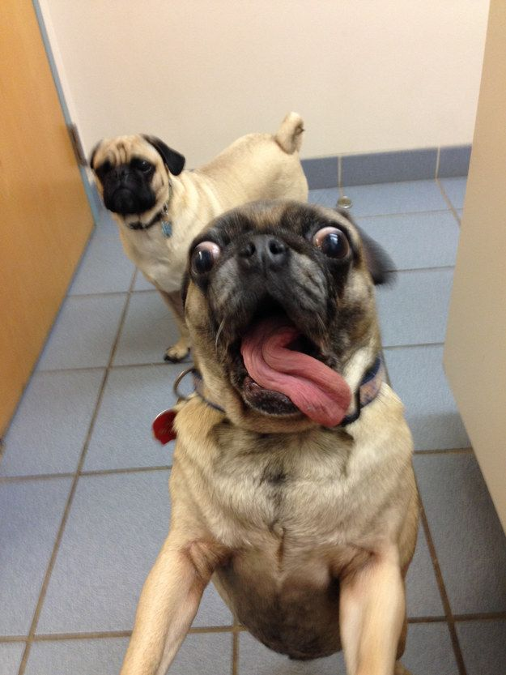

Meet Our Clinical Team
Our experienced veterinary clinicians are dedicated to providing exceptional peripatetic surgical services across Northern England. Each team member brings expertise and a commitment to excellence in patient care.
Surgeon 1 Name
MRCVS
Orthopaedic/Soft Tissue Surgery

Clinician 2 Name
BVetMed MRCVS
Echocardiography and Endoscopy
Clinician 3
BVM&S MRCVS
Abdominal Ultrasonography and Echocardiology
Surgeon 2 Name
MRCVS
Orthopaedic Surgeon

Captain Late
BVSc MRCVS
Emergency Response Specialist
Our Expertise
Advanced Qualifications
All our surgeons hold advanced qualifications and regularly attend continuing professional development courses to stay current with the latest techniques.
Years of Experience
Collectively, our team has decades of experience in complex veterinary surgery, ensuring the best outcomes for your patients.
Collaborative Approach
We work closely with referring veterinarians to ensure seamless care and communication throughout the treatment process.